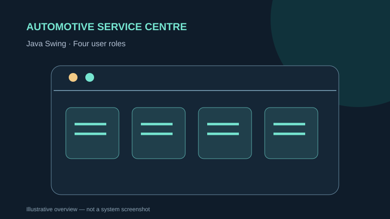

APU Automotive Service Centre
A documented Java Swing desktop management system with four user roles, appointment conflict checks, payment workflows, and local file persistence.

Concept illustration · descriptive artwork, not a screenshot of the submitted system
What the project is about
The group application organizes appointments, payments, service pricing and customer records across separate manager, counter-staff, technician and customer dashboards.
My contribution
- Participated in the four-person Java coursework project; the submitted document assigns a 25% workload share to each member.
- Exact ownership of individual Java classes or screens is not established by the uploaded report.
Key work covered
- Manager and staff role-based workflows
- Appointment scheduling and technician availability checks
- Payment records and customer feedback
- Encapsulation, abstraction, inheritance, polymorphism and interfaces
- Plain-text persistence and SHA-256 password hashing for coursework demonstration (not production-grade authentication)
From booking to payment
The submitted coursework report describes a four-role Java Swing application with Normal (60-minute) and Major (180-minute) services. Counter staff book appointments with technician-availability checks; technicians mark completed jobs and add feedback; counter staff collect payment; and customers review their service history and comments.
The 56-page report also documents a UML use-case diagram, a class diagram, the abstract User hierarchy, the Reportable interface, enums, and role-themed interfaces. Its screenshots include the actual splash screen, role selector and dashboards.
Explore the documentation highlights and report page guide ↗
Designed as coursework, not a production service
The report acknowledges that plain-text storage does not support concurrent access, appointment rescheduling is not implemented, record references are not enforced by a database, and the system has no notification service. Password storage demonstrates SHA-256 hashing, not production-grade credential security.
What this portfolio does and does not claim
The Java source is now available in a separate, private GitHub repository, including the Eclipse project files and run scripts. The repository contains local sample records, so access is restricted pending a data review. This is group coursework; individual class ownership has not been independently verified.